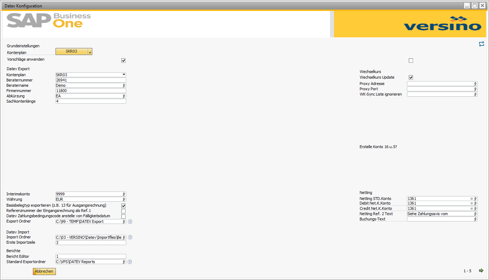
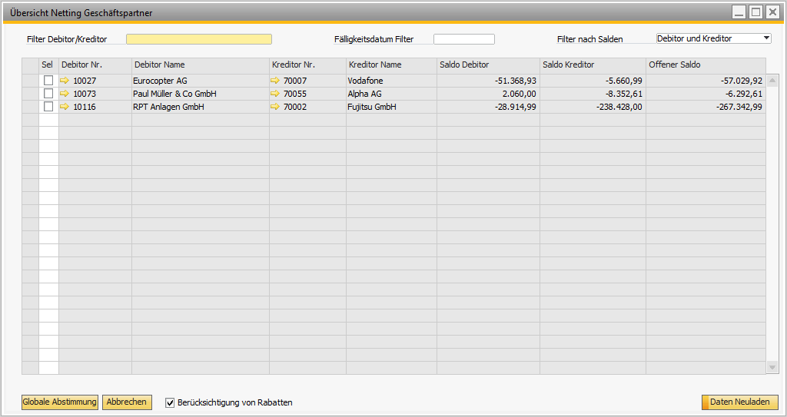
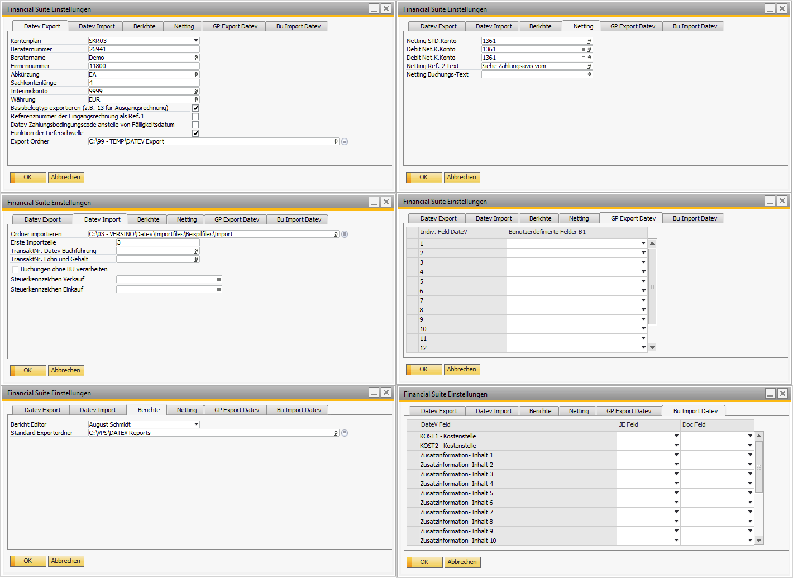

Financial Suite (Main Module)
Overview
The Versino Financial Suite Main Module is the central coordination module of the Versino Financial Suite for SAP Business One. It acts as the foundation for all other modules, provides essential services, and loads the language resources and all further modules of the suite at startup.
Module Access: The core functions are reachable via the Versino Financial Suite menu — particularly under Configuration > Financial Suite Wizard, Configuration > Settings and Netting Overview.
Benefits of the Module
- System Integration: Centralized coordination and unified initialization of all Financial Suite modules.
- Configuration Support: A guided wizard for the initial setup, including automatic adaptation for SKR03/SKR04 and CSV import options.
- Business Partner Reconciliation: A powerful netting system for automatically reconciling and clearing customer and vendor open items.
- User-Friendliness: Transparent status and error messages plus intuitive interfaces.
Main Features
Financial Suite Wizard (ConfigWizard)
The central tool for the initial configuration. The wizard offers a guided four-step setup and supports the automatic adaptation of accounts and tax codes for the SKR03/SKR04 charts of accounts. It also supports importing configurations via CSV file. Core functions include:
- Template Support: Complete templates for SKR03 and SKR04 as well as import of user-defined configurations via CSV.
- Automatic Accounts: Intelligent recognition and assignment of DATEV automatic accounts and standard tax codes — including automatic creation of 5% and 16% tax accounts.
- Tax Code Setup: Assignment of DATEV tax codes, EU markings and configuration of §13b German VAT Act scenarios.
DATEV Base Configuration in Detail
Through the central settings you manage all DATEV parameters:
- Client Number: 1–99999
- Consultant Number: 1001–9999999
- G/L Account Length: 4, 6 or 8 digits
- SKR Type: SKR03 or SKR04
- Default paths for export and import
- Fiscal year start and posting circle definition
Netting and Reconciliations
A comprehensive system for automatic reconciliation of business partners that are both customers and vendors. Functions include:
- Overview of all business partners with customer and vendor balances and various filter options.
- Automatic discount handling during reconciliation.
- Automatic creation of the necessary incoming, outgoing and clearing postings.
- Complete logging of all operations in a reconciliation history with audit trail.
System Integration
The base module coordinates all other modules of the Financial Suite, ensures a uniform menu structure and user interface, and manages central configurations and dependencies.
CSV Import Structures
If you want to import your own templates, the CSV files must follow the structures below (UTF-8, semicolon-separated):
Accounts CSV — Required Columns
- Account Code — Unique account number
- Account Name — Description of the account
- Account Type — Balance sheet / P&L assignment
- DATEV Account — DATEV-specific number
- DATEV Automatic Account — Automatic assignment
- Default VAT Code — Tax code
- DATEV Export — Export status
- Parent Account
- External Code — Third-party system reference
Tax Codes CSV — Required Columns
- Tax Code — SAP B1 code
- Description
- Inactive — Yes/No
- Category — Input VAT / Output VAT
- EU — EU marker
- Acquisition/Reverse — Reverse Charge
- Valid From — Date
- Rate — Tax rate in percent
- DATEV Marker — DATEV code
Scenarios L+L (§13b German VAT Act)
In step 3 of the wizard you configure the EU marker and the §13b scenarios. The following scenarios are available:
- Services received from abroad
- Items transferred as collateral
- Sales subject to land transfer tax
- Construction services from companies based domestically
- Gas/Electricity from abroad
- Greenhouse gas emission certificates
- Scrap metal / scrap / plastic waste
- Building cleaning
- Deliveries of gold
- Mobile phones, integrated circuits, tablet computers
- Gas/Electricity domestic
- Deliveries acc. to Annex 4
Netting in Detail
The netting system offers two modes: a global mass reconciliation for many business partners simultaneously, or a detailed individual reconciliation with comprehensive document overview.
Areas of the Detail Reconciliation
When you select a business partner, the detail view opens with four areas:
- Customer Information: Complete master data, contact, payment terms, balance, reconciliation account.
- Vendor Information: Analogous representation of the vendor master data.
- Open Documents (Customer and Vendor side): Matrix with document type, date, balance, discount amounts and editable payment amounts.
- Reconciliation History: Chronological record of all previous reconciliations, with links to the created postings.
Posting Creation in Netting
The system automatically creates three posting types:
- Incoming Payment: Clearing of the selected vendor documents against the vendor netting account.
- Outgoing Payment: Clearing of the selected customer documents against the customer netting account.
- Journal Entry for Differences: Automatic balancing of rounding differences via the standard netting account.
Discount Handling
With the option "Consider discount" in the netting overview, the system automatically detects discount terms from the payment conditions, calculates the discount amounts based on due dates, and posts them separately to the discount accounts defined in the DATEV configuration.
Integration with Other VPS Modules
The main module is the foundation for all other modules of the suite and provides central services:
VPS DATEV Export & Import
Both modules use the central DATEV configuration (client/consultant number, paths, tax-code mapping). Changes in the main module automatically affect export and import.
VPS Reporting & Pro-Rata
Reporting reports and Pro-Rata postings access central master data and configurations — for example the tax settings from the wizard.
VPS Netting
The netting system is integrated directly into the main module and uses the netting accounts and posting texts defined in the settings.
Application: Step-by-Step
Using the Financial Suite Wizard
- Navigate to Versino Financial Suite > Configuration > Financial Suite Wizard.
- Step 1 (Basic Settings): Choose the chart of accounts (e.g. SKR04), the account length (4–8 digits) and whether you want to enable suggestions.
- Step 2 (Account Configuration): Verify the automatically assigned accounts. Adjust them manually if needed or import your own CSV file.
- Step 3 (Tax Code Setup): Assign DATEV tax codes and configure special scenarios such as §13b German VAT Act.
- Step 4 (Summary): Review all changes and confirm to apply the configuration automatically in the system.

Performing a Netting Reconciliation
- Open the overview via Versino Financial Suite > Netting Overview.
- Set the desired filters (e.g. by due date) and activate "Consider discount" if needed.
- For a global reconciliation, mark the desired business partners and click "Global Reconciliation".
- For a detailed individual reconciliation, double-click on a business partner, select the documents and confirm the offsetting.

Configuring Basic Settings
- Navigate to Versino Financial Suite > Configuration > Settings.
- Enter Client Number (1–99999) and Consultant Number (1001–9999999).
- Define G/L account length and SKR type.
- Configure export/import parameters and netting accounts.
- Save the settings.

Required Permissions
To use the VPS Financial Suite, the following permissions must be set in the SAP B1 authorization tree. Path in B1: Administration → System Initialization → Authorizations → General Authorizations.
SAP B1 Standard Permissions
| Permission | Level | Purpose |
|---|---|---|
| Add-On Administration | Full Authorization | Start add-on, see menus |
| Manage User-Defined Fields | Full Authorization | Read AND write UDFs |
| Manage User-Defined Tables | Full Authorization | Read AND write UDTs (@VPS_*) |
| Manage User-Defined Objects | Full Authorization | UDOs (Pro-Rata, Netting, DATEV export) |
| Query Generator | Full Authorization | Run SQL queries |
| Query Manager | Full Authorization | Read Cockpit tabs from OUQR |
| Reports and Layout Management | Full Authorization | Run Crystal Reports |
| Print Layouts | Full Authorization | Maintain / print layouts |
VPS Custom Permissions
These permissions are created automatically in the authorization tree under "Versino Projects Datev-AddOn" on first module launch. Users need Full Authorization there for every function they should be able to use.
DATEV / Financial Suite
| ID | Description |
|---|---|
VPS_DATEV | Root node |
VPS_DTV_CONF | Configuration |
VPS_DTV_SET | Manage settings |
VPS_DTV_EXP | Data export |
VPS_DTV_JEXS | Change JE export status |
VPS_DTV_IMP | Data import |
VPS_DTV_WKS | Download exchange rates |
VPS_DTV_REP | Reports (root) |
VPS_DTV_REPZAV | Payment advice |
VPS_DTV_NETABS | Netting reconciliation |
VPS_DTV_REPSUSA | Trial balance |
VPS_DTV_REPKDO | Customer balance confirmation |
VPS_DTV_REPLDO | Vendor balance confirmation |
VPS_DTV_REPKABU | Cash book |
VPS_DTV_REPKTSA | G/L account statement |
VPS_DTV_REPTTKD | Top 10 customers |
VPS_DTV_TXTCONF | Configure texts |
VPS_DTV_CNFDTV | Configuration wizard |
Reporting (Crystal Reports)
| ID | Report |
|---|---|
VPS_SALDENBESTÄTIGUNG | Customer balance confirmation |
VPS_SALDENBESTÄTIGUNG_LIEFERANTEN | Vendor balance confirmation |
VPS_NETTINGABSTIMMUNGEN | Netting reconciliations |
VPS_ZAHLUNGSAVIS | Payment advice |
VPS_KASSENBUCH | Cash book |
VPS_KONTOAUSZUG_SACHKONTEN | G/L account statement |
VPS_OFFENE_POSTEN_KUNDEN | Open items customers |
VPS_OFFENE_POSTEN_LIEFERANTEN | Open items vendors |
VPS_SUMMEN_UND_SALDENLISTE | Trial balance (G/L accounts) |
VPS_SUMMEN_UND_SALDENLISTE_GP | Trial balance (BPs) |
VPS_TOP_10_KUNDEN | Top 10 customers |
VPS_TOP_10_LIEFERANTEN | Top 10 vendors |
VPS_ZAHLUNGSMORAL | Payment behavior |
VPS_BWA | Business analysis (BWA) |
Important Notes
- First launch: Log in as a superuser when calling the modules for the first time — the VPS custom permissions are then created automatically in the authorization tree.
- Users without permission either don't see the add-on menu at all or receive a warning in the B1 status bar.
- Level: Where not stated otherwise, always assign "Full Authorization". "Read" is not enough for the VPS modules, since they write configurations to UDTs.
Tips and Troubleshooting
Tips for Daily Work
- Optimal use of the wizard: Use the SKR03/SKR04 templates for a fast and safe initial configuration. Always create backups before larger changes.
- Efficient netting use: Carefully configure the netting accounts in the settings before using the function for the first time.
- Maintenance and monitoring: Run test postings after changes and document all adjustments for later reference.
- CSV files: Make sure CSV files for import use the correct format (UTF-8, semicolon-separated).
Common Problems and Solutions
Problem: The wizard does not start.
Solution: Start SAP Business One as administrator. If the problem persists, a reinstallation of the Financial Suite may be necessary.
Problem: The account import from a CSV file fails.
Solution: Check the file format (UTF-8 encoding, semicolon as separator). Make sure no duplicate account numbers are included and all columns meet the validation rules.
Problem: Tax codes are not recognized.
Solution: Check DATEV code assignments, validate the tax-group configuration, verify input/output VAT categories and check validity dates.
Problem: Netting does not work or postings are not created.
Solution: Check business partner links (customer/vendor). Validate that the reconciliation accounts and rounding accounts are correctly configured in the settings. Also check user permissions for creating payments and journal entries.
Problem: At startup the error message "DATEV not started successfully" appears.
Solution: Restart SAP Business One as administrator. If the problem persists, check the DATEV component installation or contact your IT administrator.